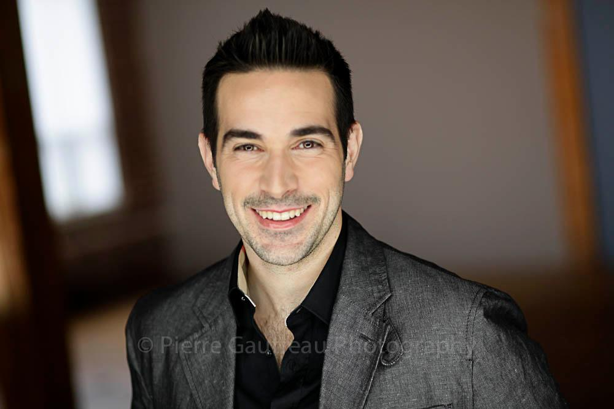

I am a first-generation Canadian with a "builder" mindset. As a second-year IT student, I focus on the architecture and security of systems, ensuring that infrastructure is not only functional but resilient and highly documented.
Why NSCC? I chose NSCC for its hands-on approach. I wanted to move beyond theory and gain experience in real-world server environments where I could configure, test, and secure infrastructure.
Career Goals: My objective is to enter the field of Systems Administration or Cybersecurity. I aim to build secure, self-hosted environments that prioritize organizational data sovereignty.
The Project: Developed a "Dark Server" strategy for my Capstone (onepercentplaid.com). This involves isolating a Windows Domain Controller behind a hardened Ubuntu Gateway using Nginx and Tailscale ZTNA.
Employer Benefit: Provides high-level risk mitigation by removing the public-facing attack surface of critical identity infrastructure while maintaining secure, authenticated access via Duo MFA.
The Project: Deployed a private RustDesk server for internal remote support. This emphasized a Documentation-First approach to ensure ease of management for technical teams.
Employer Benefit: Reduces reliance on external SaaS providers and ensures that all remote support traffic remains within the internal network perimeter.
The Project: A self-directed study creating a virtual Magic: The Gathering environment. This required custom server-side logic and proves my ability to adapt IT principles to non-standard business requirements.
Employer Benefit: Demonstrates technical adaptability and the logic required to build bespoke tools when commercial software falls short of specific needs.